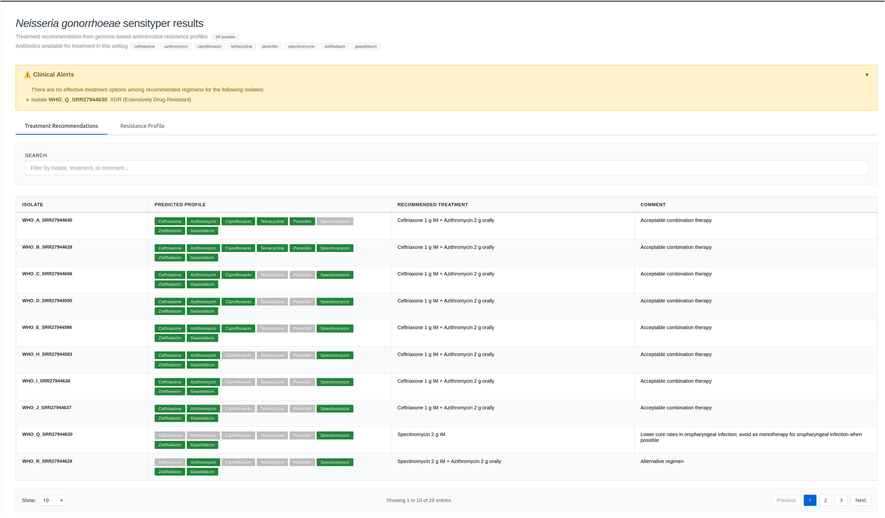
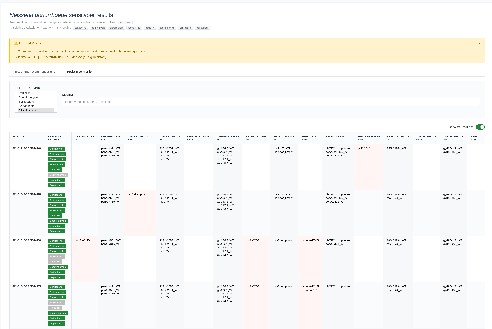
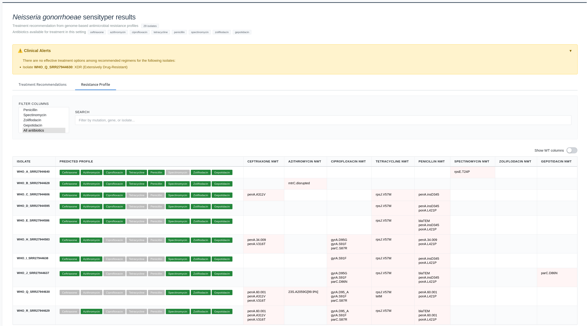

SensiTyper tutorial - Analysis of Neisseria gonorrhoeae WHO reference strains¶
Introduction¶
This tutorial demonstrates a complete SensiTyper workflow using WHO Neisseria gonorrhoeae reference strains with known antimicrobial resistance (AMR) profiles.
Prerequisites:
- Python 3.6+
- ARIBA installed (
conda install -c bioconda ariba) - Sensityping scripts and databases (see README.md for installation)
Tutorial Dataset¶
We will use whole-genome sequencing Illumina data produced from 29 N. gonorrhoeae WHO reference strains representing diverse resistance profiles. FASTQ files for these strains can be obtained from the European Nucleotide Archive (ENA) study accession PRJNA1067895.
Pre-computed outputs from running this tutorial are available in the examples/ directory:
examples/
├── ariba_output/ # ARIBA results per strain
│ ├── WHO_A_SRR27944640_ARIBA/
│ │ └── report_complete.tsv
│ ├── WHO_B_SRR27944628_ARIBA/
│ │ └── report_complete.tsv
│ ├── ... (one folder per strain)
│ └── ariba_summary.csv # ARIBA summary — input for sensitype
└── sensityper_output/ # SensiTyper results
├── WHO_strains_sensitype.tsv # Resistance profiles
├── WHO_strains_sensitreat.tsv # Treatment recommendations
├── WHO_strains_sensitreat.html # Interactive combined HTML report
└── alert_output.tsv # XDR / no-treatment isolates
Step 1: Prepare FASTQ Data¶
First, download the FASTQ files for all or a subset of the following strains from the ENA PRJNA1067895. Here is a table with individual run accessions for each strain:
| Strain | Run accession |
|---|---|
| WHO_A | SRR27944640 |
| WHO_B | SRR27944628 |
| WHO_C | SRR27944606 |
| WHO_D | SRR27944595 |
| WHO_E | SRR27944586 |
| WHO_F | SRR27944585 |
| WHO_G | SRR27944584 |
| WHO_H | SRR27944583 |
| WHO_I | SRR27944638 |
| WHO_J | SRR27944637 |
| WHO_K | SRR27944636 |
| WHO_L | SRR27944635 |
| WHO_M | SRR27944634 |
| WHO_N | SRR27944633 |
| WHO_O | SRR27944632 |
| WHO_P | SRR27944631 |
| WHO_Q | SRR27944630 |
| WHO_R | SRR27944629 |
| WHO_S | SRR27944627 |
| WHO_S2 | SRR27944626 |
| WHO_T | SRR27944625 |
| WHO_U | SRR27944624 |
| WHO_V | SRR27944623 |
| WHO_W | SRR27944622 |
| WHO_X | SRR27944621 |
| WHO_Y | SRR27944620 |
| WHO_Z | SRR27944619 |
| WHO_alpha | SRR27944639 |
| WHO_beta | SRR27944617 |
File Naming Convention¶
FASTQ files must follow one of these naming patterns:
{sample}_1.fastq.gz / {sample}_2.fastq.gz
{sample}_R1.fastq.gz / {sample}_R2.fastq.gz
{sample}_R1_001.fastq.gz / {sample}_R2_001.fastq.gz
(Optional) Standardize File Naming¶
If your FASTQ files have inconsistent naming, use the rename module:
# Preview changes (dry-run)
python sensityper.py rename \
--directories examples/ \
--pre
# Execute renaming
python sensityper.py rename \
--directories examples/ \
Step 2: Run ARIBA¶
ARIBA identifies antimicrobial resistance genes and mutations from whole-genome sequencing data.
Command¶
python sensityper.py ariba \
--input_dirs /path/to/PRJNA1067895_Illumina \
--output_dir PRJNA1067895_ARIBA \
--threads 8
Arguments:
--input_dirs: Directory containing FASTQ files--output_dir: Where to save ARIBA results--threads: CPU cores to use (adjust based on your system)
Expected Runtime¶
- ~2-5 minutes per isolate (depending on CPU)
Expected Output¶
Output folders are named {strain_accession}_ARIBA. The pre-computed results for this dataset are in examples/ariba_output/:
PRJNA1067895_ARIBA/
├── WHO_A_SRR27944640_ARIBA/
│ └── report_complete.tsv
├── WHO_B_SRR27944628_ARIBA/
│ └── report_complete.tsv
├── ... (one folder per strain)
└── ariba_summary.csv ← Main output for next step
Verify Success¶
Check that ariba_summary.csv was created:
Expected Output (truncated):
name,penA.cluster,penA.match,penA.assembled,penA.pct_coverage,...
WHO_A_SRR27944640,yes,yes,yes,100,...
WHO_B_SRR27944628,yes,yes,yes,100,...
A pre-computed version is available at examples/ariba_output/ariba_summary.csv.
Note on paths: the name column of the bundled ariba_summary.csv holds paths relative to the repository root (examples/ariba_output/<sample>_ARIBA/report_complete.tsv). The sensitype module opens each of those per-sample reports to confirm wild-type positions, so run the commands below from the root of the cloned repository. To run from anywhere else, rewrite that column to absolute paths first.
Step 3: Generate Resistance Profiles¶
The sensitype module analyzes ARIBA output to identify genetic determinants of resistance and outputs a list of antibiotics each strain is susceptible to.
Command¶
python sensityper.py sensitype \
--input_AMRtable examples/ariba_output/ariba_summary.csv \
--sensiscript_outfile WHO_strains_sensitype.tsv
Arguments:
--input_AMRtable: ARIBA summary CSV from Step 2--sensiscript_outfile: Output file path (TSV format)--antibiotics: (Optional) Comma-separated list to analyze specific antibiotics (default: all 8)
Expected Runtime¶
- ~5-15 seconds for 29 isolates
Expected Output Files¶
- WHO_strains_sensitype.tsv - Tab-separated resistance mechanisms
- WHO_strains_sensitype.html - Interactive HTML table
Pre-computed versions are available at examples/sensityper_output/.
Inspect WHO_strains_sensitype.tsv¶
Expected Output (truncated):
isolate treatment recommendation ceftriaxone_NWT ceftriaxone_WT
WHO_A_SRR27944640 ceftriaxone,azithromycin penA.mosaic_WT
WHO_B_SRR27944628 ceftriaxone,azithromycin penA.mosaic_WT
Interpreting Results¶
Columns:
isolate: Sample identifiertreatment recommendation: Comma-separated list of suitable antibiotics{antibiotic}_NWT: Non-Wild-Type (resistance mutations, RED in HTML){antibiotic}_WT: Wild-Type (susceptibility markers, GREY in HTML)
Example: WHO_A_SRR27944640
ceftriaxone_NWT: (empty)
ceftriaxone_WT: penA.A311_WT,penA.V316_WT,penA.A501_WT
azithromycin_NWT: (empty)
azithromycin_WT: 23S.A2059_WT,23S.C2611_WT,mtrC.WT,mtrD.WT
ciprofloxacin_NWT: (empty)
ciprofloxacin_WT: gyrA.D95_WT,gyrA.S91_WT,parC.D86_WT,parC.E91_WT,parC.S87_WT
spectinomycin_NWT: rpsE.T24P
spectinomycin_WT: 16S.C1184_WT
gepotidacin_NWT: (empty)
gepotidacin_WT: gyrA.A92_WT,parC.D86_WT
Interpretation:
- Ceftriaxone: Susceptible (no key penA mutations)
- Azithromycin: Susceptible (no key 23S rRNA or mtrD mutations)
- Ciprofloxacin: Susceptible (no key gyrA or parC mutations)
- Spectinomycin: Resistant (rpsE T24P)
- Gepotidacin: Susceptible (neither gyrA A92T nor parC D86N)
- Treatment: Suitable for ceftriaxone + azithromycin dual therapy
Example: WHO_Q_SRR27944630 (XDR)
ceftriaxone_NWT: penA.60.001,penA.A311V,penA.V316T
ceftriaxone_WT: penA.A501_WT
azithromycin_NWT: 23S.A2059G[99.9%]
azithromycin_WT: 23S.C2611_WT,mtrC.WT,mtrD.WT
ciprofloxacin_NWT: gyrA.D95_A,gyrA.S91F,parC.S87R
ciprofloxacin_WT: parC.D86_WT,parC.E91_WT
spectinomycin_NWT: (empty)
spectinomycin_WT: 16S.C1184_WT,rpsE.T24_WT
gepotidacin_NWT: (empty)
gepotidacin_WT: gyrA.A92_WT,parC.D86_WT
Interpretation:
- Ceftriaxone: Resistant (mosaic penA with key resistance mutations)
- Azithromycin: Resistant (23S rRNA mutation at position 2059)
- Ciprofloxacin: Resistant (gyrA mutations at codons 91 and 95)
- Spectinomycin: Susceptible (16S C1184 and rpsE T24 both wild-type)
- Gepotidacin: Susceptible (excluded only when gyrA A92T and parC D86N occur together; neither is present)
- Treatment: XDR - requires alternative regimen or newer oral agents
Explore WHO_strains_sensitreat.html¶
Open the HTML file in your web browser:
open WHO_strains_sensitreat.html # macOS
xdg-open WHO_strains_sensitreat.html # Linux
start WHO_strains_sensitreat.html # Windows
Interactive Features:
- Click column headers to sort (▲/▼ indicators)
- Search box for live filtering
- Antibiotic filter (multi-select dropdown)
- Color coding: Red=resistance (NWT), Blue=susceptible (WT)
- Pagination (10/25/50/100/All entries per page)
- WT columns to show or hide identified wildtype positions
Step 4: Assign Treatment Recommendations¶
The sensitreat module assigns evidence-based treatment regimens based on resistance profiles.
Command¶
python sensityper.py sensitreat \
--input_file WHO_strains_sensitype.tsv \
--treatment_output WHO_strains_sensitreat.tsv
Arguments:
--input_file: Resistance TSV from Step 3--treatment_output: Output file path for treatment recommendations--available_antibiotics: (Optional) Limit to available antibiotics (default: all except azithromycin monotherapy)--sensitreat_order: (Optional) Customize regimen priority order
Expected Runtime¶
- ~2-5 seconds for 29 isolates
Expected Output Files¶
- alert_output.tsv - XDR/untreatable isolates flagged for review
- WHO_strains_sensitreat.tsv - Treatment recommendations per isolate
- WHO_strains_sensitreat.html - Combined tabbed HTML with both resistance and treatment tables
Pre-computed versions are available in examples/sensityper_output/.
Inspect WHO_strains_sensitreat.tsv¶
Expected Output (truncated):
isolate Predicted Profile Recommended Treatment Comment
WHO_A_SRR27944640 ceftriaxone=YES, azithromycin=YES, ciprofloxacin=YES, tetracycline=YES, Ceftriaxone 1 g IM + Azithromycin 2 g orally Acceptable combination therapy
penicillin=YES, spectinomycin=NO, zoliflodacin=YES, gepotidacin=YES
WHO_B_SRR27944628 ceftriaxone=YES, azithromycin=YES, ciprofloxacin=YES, tetracycline=YES, Ceftriaxone 1 g IM + Azithromycin 2 g orally Acceptable combination therapy
penicillin=YES, spectinomycin=YES, zoliflodacin=YES, gepotidacin=YES
Inspect alert_output.tsv¶
Expected Output (if XDR isolates present):
Alert Types:
- XDR: Extensively Drug-Resistant (resistant to ceftriaxone, azithromycin, AND ciprofloxacin)
- None: No suitable treatment available from specified antibiotics
Interpreting Treatment Recommendations¶
Example 1: WHO_A_SRR27944640 (Susceptible)
Predicted Profile: ceftriaxone=YES, azithromycin=YES, ciprofloxacin=YES, tetracycline=YES, penicillin=YES, spectinomycin=NO, zoliflodacin=YES, gepotidacin=YES
Recommended Treatment: Ceftriaxone 1 g IM + Azithromycin 2 g orally
Comment: Acceptable combination therapy
Clinical Interpretation:
- Regimen: Standard dual therapy (first-line)
- Route: Ceftriaxone intramuscular (IM), Azithromycin oral
- Rationale: Susceptible to both agents, combination prevents resistance development
- Category: Acceptable combination therapy (preferred dual therapy)
Example 2: WHO_R_SRR27944629 (Ceftriaxone-Resistant)
Predicted Profile: ceftriaxone=NO, azithromycin=YES, ciprofloxacin=NO, tetracycline=NO, penicillin=NO, spectinomycin=YES, zoliflodacin=YES, gepotidacin=YES
Recommended Treatment: Spectinomycin 2 g IM + Azithromycin 2 g orally
Comment: Alternative regimen
Clinical Interpretation:
- Regimen: Alternative dual therapy (ceftriaxone resistance detected)
- Route: Both intramuscular or oral
- Rationale: Avoid ceftriaxone due to resistance, use spectinomycin + azithromycin
- Category: Alternative regimen
- ⚠️ Important: Spectinomycin has lower cure rates for pharyngeal infections - avoid when possible
Example 3: WHO_Q_SRR27944630 (XDR)
Predicted Profile: ceftriaxone=NO, azithromycin=NO, ciprofloxacin=NO, tetracycline=NO, penicillin=NO, spectinomycin=YES, zoliflodacin=YES, gepotidacin=YES
Recommended Treatment: Spectinomycin 2 g IM
Comment: Lower cure rates in oropharyngeal infection; avoid as monotherapy for oropharyngeal infection when possible
Alert: XDR
Clinical Interpretation:
- Regimen: Spectinomycin monotherapy (highest-priority available regimen; zoliflodacin and gepotidacin are also predicted active)
- Alert: XDR isolate - flagged for clinical review
- Action Required:
- Confirm infection site (spectinomycin ineffective for pharyngeal)
- Consider newer oral agents (zoliflodacin, gepotidacin)
- Consult infectious disease specialist
- Report to public health authorities
- Ensure test of cure after treatment
Treatment Recommendation Categories¶
Guideline-recommended monotherapy:
- Ceftriaxone 1 g IM
- Used when: Azithromycin resistance detected OR azithromycin unavailable
Acceptable combination therapy:
- Ceftriaxone 1 g IM + Azithromycin 2 g orally
- Used when: Both agents susceptible
- Preferred regimen for uncomplicated gonorrhea
Alternative regimen:
- Spectinomycin 2 g IM + Azithromycin 2 g orally
- Used when: Ceftriaxone resistance detected
- ⚠️ Lower cure rates for pharyngeal infections
Newer oral options:
- Zoliflodacin 3 g orally (single dose)
- Gepotidacin 3 g orally twice (2 doses, 10-12 h apart)
- US FDA-approved for uncomplicated urogenital infection; lower cure rates in oropharyngeal infection
Step 5: Explore Combined HTML Report¶
The combined HTML report is the primary output for clinical interpretation and surveillance.
Open WHO_strains_sensitreat.html¶
open WHO_strains_sensitreat.html # macOS
xdg-open WHO_strains_sensitreat.html # Linux
start WHO_strains_sensitreat.html # Windows
A pre-computed version is available at examples/sensityper_output/WHO_strains_sensitreat.html.
HTML Structure¶
Report Header: shows the isolate count and the antibiotics available for treatment in this setting, as passed to --available_antibiotics. These gate which regimens sensitreat may choose, so an isolate predicted susceptible to a drug that is not available will not be assigned it.
Alert Banner (if applicable):
⚠️ Clinical Alerts
• Isolate WHO_Q_SRR27944630: XDR (Extensively Drug-Resistant) - Requires clinical review
Tab Navigation: - Tab 1: Treatment Recommendations (shown by default) - Tab 2: Resistance Profile (detailed mechanisms)
Tab 1: Treatment Recommendations¶
Columns (4 total):
- Isolate - Sample identifier
- Predicted Profile - Color-coded susceptibility badges
- Green badge = YES (susceptible)
- Gray badge = NO (resistant)
- Recommended Treatment - Full regimen with dosing instructions
- Comment - Clinical guidance and recommendation category
Interactive Features:
- Sort: Click column headers
- Search: Live filtering across all columns
- Pagination: 10/25/50/100/All entries per page

Tab 2: Resistance Profile¶
Columns (varies by antibiotic):
isolatePredicted Profile- the same colour-coded susceptibility badges as Tab 1- For each antibiotic:
{antibiotic}_NWT,{antibiotic}_WT
Interactive Features:
- Sort: Click column headers
- Search: Live filtering
- Antibiotic Filter: Multi-select dropdown
- Pagination: Same as Tab 1

WT columns can also be hidden with the 'Show WT' switch:

Complete Pipeline (Alternative Approach)¶
Instead of running modules separately, use the pipeline module for end-to-end automation. The pre-computed outputs in examples/ were generated with this single command:
Single Command¶
python sensityper.py pipeline \
--modules ariba,sensitype,sensitreat \
--other_arguments '--input_dirs /path/to/PRJNA1067895_Illumina \
--output_dir PRJNA1067895_ARIBA \
--sensiscript_outfile WHO_strains_sensitype.tsv \
--treatment_output WHO_strains_sensitreat.tsv'
What Happens¶
- ARIBA module: Processes FASTQ files →
ariba_output/ariba_summary.csv - Sensitype module: Analyzes ARIBA output →
WHO_strains_sensitype.tsv - Sensitreat module: Assigns treatments →
WHO_strains_sensitreat.tsv+WHO_strains_sensitreat.html
Benefits of the pipeline mode¶
- Single command: Less manual intervention
- Optimized HTML: Only one combined HTML generated (no duplicate standalone HTML)
- Automatic chaining: Output of one module feeds into next
When to Use Separate Modules¶
- Re-running analysis: Already have ARIBA results, only need to update treatment logic
- Custom antibiotics: Want to analyze different antibiotic subsets
- Debugging: Isolate specific module failures
- External ARIBA: Using ARIBA results from another study
Next Steps¶
Using Your Own Data¶
- Prepare FASTQ files:
- Ensure paired-end reads (R1/R2)
- Follow naming convention
-
Place in a single directory
-
Run pipeline:
-
Review outputs:
- Check
alert_output.tsvfor XDR isolates - Open the generated HTML report for interactive results
- Share HTML with clinical team (self-contained, no external dependencies)
Customizing treatment recommendations¶
Limit to available antibiotics:
python sensityper.py sensitreat \
--input_file my_resistance.tsv \
--available_antibiotics ceftriaxone,azithromycin,spectinomycin \
--treatment_output my_treatment.tsv
Change regimen priority:
python sensityper.py sensitreat \
--input_file my_resistance.tsv \
--sensitreat_order ceftriaxone,azithromycin+spectinomycin,spectinomycin \
--treatment_output my_treatment.tsv
Batch processing multiple studies¶
# Process multiple sequencing runs
python sensityper.py ariba \
--input_dirs /data/run1,/data/run2,/data/run3 \
--output_dir batch_ariba \
--threads 32
# Continue pipeline
python sensityper.py pipeline sensitype,sensitreat \
--input_AMRtable batch_ariba/ariba_summary.csv \
--sensiscript_outfile batch_resistance.tsv \
--treatment_output batch_treatment.tsv
Clinical Reminder¶
This tool is for surveillance and research. Clinical decisions should consider: - Patient allergies and contraindications - Infection site (pharyngeal vs. urogenital) - Local resistance patterns - Current treatment guidelines - Treatment history and previous failures
Always consult infectious disease specialists for: - XDR isolates - Treatment failures - Severe infections (disseminated, PID) - Immunocompromised patients
Additional Resources¶
- README.md - Installation and quick start
- ARIBA documentation - https://github.com/sanger-pathogens/ariba
- WHO gonorrhea guidelines - https://www.who.int/publications/i/item/9789241549691
- CDC gonorrhea treatment - https://www.cdc.gov/std/treatment-guidelines/gonorrhea.htm
Questions or Issues?¶
- Open an issue on GitHub!